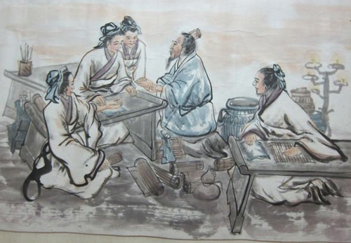

Historia del masaje
La historia… testigo de los tiempos, luz de la verdad, vida de la memoria, maestra de la vida, testigo de la antigüedad.
Cicerón
Aunque se desconoce la datación del inicio del uso del masaje por el hombre, lo naturalmente probable es que coincida con el surgimiento del mismo, desde que nuestro instinto nos obligó a presionar o frotar partes del cuerpo para aliviar un dolor, una tensión o sanar heridas. Por ello esta práctica curativa es reconocida como la más antigua de la humanidad.
La práctica de los masajes está evidenciada en pinturas y textos elaborados a lo largo de la historia en diferentes partes del mundo; la localización e interpretación de estos elementos desde hace algún tiempo, nos ha permitido descubrir entre otras cosas, las prácticas antiguas en el campo de la medicina
Para hacernos a una idea del uso del tacto curativo a través de la historia, se dispone la siguiente cronología:
El masaje en la antigüedad
- 2330 a. C.: en Saqqara (Egipto), se elabora una pintura mural en la tumba de Akmanthor, quien fué el más alto oficial después del Faraón. El lugar también es conocido como “la tumba del médico”, sugiriendo además que las personas de la pintura están haciendo algo relacionado con la salud, aparentemente prácticas de masaje tanto en pies como en manos.
Los egipcios se han acreditado ser los primeros en practicar la reflexología basados en esta pintura.
- 1800 a. C.: en El-Lahun (Egipto), se elaboraron una serie de papiros en escritura hierática denominados Papiros de Kahun. Algunos fragmentos de éstos tienen que ver con la salud de la mujer, por ejemplo, sobre enfermedades ginecológicas, la fertilidad, el embarazo, la anticoncepción, etc. Además es considerado como el texto médico más antiguo que haya sido encontrado recientemente.
En uno de los fragmentos se cita (Columna 1, 23-25):
Examen: Examen de una mujer con dolor en las piernas y pantorrillas después de caminar
Diagnóstico: Debe decir de ella “es el vertido de la matriz”
Tratamiento: Debe tratarlo con un masaje de las piernas y pantorrillas con barro hasta que ella esté bien.
- 1550 a. C.: en Luxor (Egipto), se elaboró un tratado de medicina escrito en hierático, conocido como el Papiro Ebers. Este escrito conserva para nosotros el registro más amplio de la medicina egipcia antigua conocida, abarcando un tratado sobre el corazón, alrededor de 700 fórmulas mágicas, remedios y evidencia de una larga tradición del empirismo.
De las traducciones se ha identificado la declaración “frotado con vinagre”, lo cual puede inferir prácticas de masaje con este líquido.
- 722-481 a. C.: en China se compone el Huangdi Neijing dando como resultado una recopilación de los conocimientos médicos conocidos en aquel entonces, y sentando las bases de la medicina tradicional china. En este texto se hace referencia al masaje en 30 capítulos diferentes del Nei Jing, especificando el uso de diferentes técnicas de masaje y la forma en que se debe utilizar en el tratamiento de enfermedades específicas, y lesiones.
La obra también es conocida como “Canon interno del emperador” , título que llevó a algunos a creer que el texto había sido escrito durante la época del emperador amarillo (aproximadamente del 2700 a. C.).
- 700 a. C.: Bian Qüe, el médico más antiguo conocido de China utiliza el masaje en la práctica médica. En el proceso de diagnosticar, Bian Que ya había utilizado los cuatro métodos que consistían en observar (en sus lenguas y sus apariencias externas), escuchar (a sus patrones de la voz y la respiración), consultar (acerca de sus síntomas), y tomar el pulso.
A causa de que sus habilidades médicas eran tan increíbles, era reconocido como el legendario doctor.

- 500 a. C.: Jīvaka Komarabhācca, también conocido como Shivago Komarpaj, fué el fundador del masaje tradicional tailandés (Nuad Boran) y la medicina tailandesa. Él codificó un sistema de curación que combinaba la acupresión, la reflexología, y las posturas asistidas de yoga.
En su época, la medicina y la religión iban muy ligados y Komarpaj en aquel entonces se había convertido en la figura central de los sistemas médicos budistas. Además ofreció sus servicios médicos gratuitos a muchos monjes budistas, entre ellos el propio Buda y el resultado de su humanitarismo es que aparece muy bien recordado en las escrituras budistas y siendo además conocido como “el padre doctor” en Tailandia.